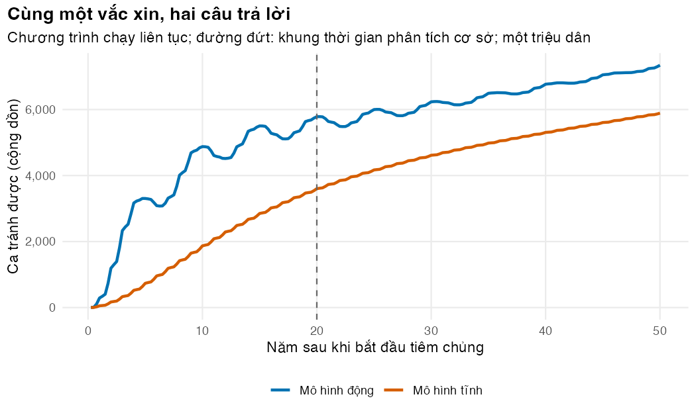
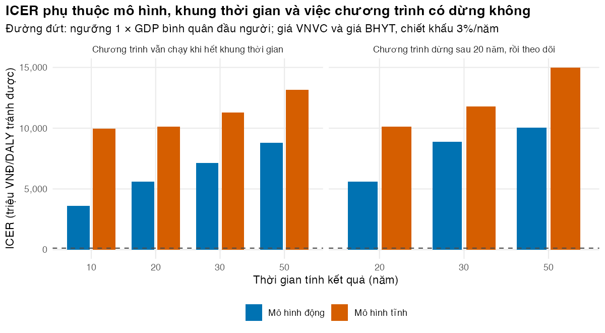

Bài 5: Đánh giá kinh tế với mô hình lây truyền động
Từ đầu ra của mô hình đến chi phí, DALY và ICER; so sánh mô hình tĩnh và động cho cùng một vắc xin
Vì sao bạn nên quan tâm?
Giả sử một hội đồng tư vấn của Bộ Y tế được hỏi: có nên tiêm Qdenga miễn phí cho mọi trẻ 9 tuổi? Mỗi năm có khoảng 1,351,000 trẻ bước sang tuổi này (ước tính thô từ dân số và tuổi thọ (Cục Thống kê (Bộ Tài chính) 2026b; World Health Organization 2026)); tiêm 80% với giá VNVC cộng khám sàng lọc tốn khoảng 2,898 tỷ VNĐ mỗi năm (Hệ thống tiêm chủng VNVC 2026; Bộ Y tế 2024b). Mốc mà các phân tích ở Việt Nam hay dùng là 125.5 triệu VNĐ cho mỗi năm sống điều chỉnh theo bệnh tật (DALY) tránh được, bằng một lần GDP bình quân đầu người (Cục Thống kê (Bộ Tài chính) 2026a; Ong và c.s. 2026). Bài này cho bạn biến đầu ra của mô hình động thành chi phí, DALY và ICER, tìm mức giá vắc xin đáng tiền, và đo xem mô hình tĩnh làm lệch câu trả lời bao nhiêu.
Mục tiêu học tập
Sau bài này, bạn có thể:
Lấy dòng sự kiện (ca nhiễm, ca bệnh, nhập viện, tử vong, lượt tiêm) từ đầu ra của mô hình ODE bằng các ngăn đếm cộng dồn.
Gắn chi phí (giá dịch vụ BHYT và giá vắc xin hiện hành, VNĐ) và năm sống điều chỉnh theo bệnh tật (DALY) cho từng sự kiện, chiết khấu (discounting) theo thời gian liên tục.
Phân biệt thời gian chạy chương trình với khung thời gian phân tích (time horizon), rồi chọn và báo cáo khung phù hợp.
Chạy phiên bản tĩnh (static model) của cùng một mô hình và đo độ lệch của nó so với mô hình động.
Xác minh (verification) một phân tích chi phí-hiệu quả bằng các kiểm tra chạy lại được, trong đó mỗi kiểm tra có thể thất bại.
Ý chính
Mô hình động mô phỏng cả quần thể theo lịch, kể cả những đoàn hệ chưa sinh. Kết quả là của chương trình trong một khung thời gian, không phải của một đoàn hệ.
Chi phí và DALY gắn với dòng (ca mới, lượt tiêm), lấy từ hiệu của các ngăn đếm cộng dồn và chiết khấu theo ngày với \((1+r)^{-t/365}\). Số năm sống mất đi (years of life lost, YLL) của ca tử vong cũng được chiết khấu.
Phiên bản tĩnh công bằng nhất là cùng mô hình với lực lây nhiễm (force of infection) “đóng băng” theo quỹ đạo khi không tiêm. Khác biệt duy nhất còn lại là hiệu quả gián tiếp.
Nếu vắc xin giảm lây và chương trình chạy liên tục, mô hình tĩnh đánh giá thấp ca và DALY tránh được, nên ICER cao hơn. Nếu vắc xin chỉ giảm bệnh, hiệu quả gián tiếp xấp xỉ 0 và chênh lệch này biến mất.
Chương trình chạy bao lâu và theo dõi bao lâu là hai lựa chọn khác nhau. Khi bảo vệ suy giảm, tiêm chủng một phần chỉ hoãn nhiễm; cắt khung lúc chương trình còn chạy tính ca bị hoãn là “tránh được”. Hãy báo cáo nhiều khung.
Chọn mức bao phủ bằng ICER gia tăng giữa các chiến lược, không chỉ ICER trung bình so với không tiêm.
Với giá thật (vắc xin theo giá VNVC, điều trị theo giá BHYT), câu trả lời hữu ích nhất cho người ra quyết định thường là mức giá vắc xin tối đa để chương trình đạt chi phí-hiệu quả ở ngưỡng đã chọn.
Nội dung
Kết quả của chương trình, không của một đoàn hệ
Ở M02, ta theo một đoàn hệ từ lúc điều trị đến khi tử vong. Mô hình động mô phỏng cả tỉnh theo lịch: mỗi năm có một lứa trẻ mới đến tuổi tiêm, và lợi ích của một lứa tràn sang các lứa khác qua lây truyền. Đơn vị phân tích vì vậy là chương trình trong một khung thời gian (Pitman và c.s. 2012; Jit và Brisson 2011).
Từ trạng thái đến sự kiện
Mỗi ngày \(d\), số ca nhiễm mới là \(C(d) - C(d-1)\), với \(C\) là ngăn đếm cộng dồn có đạo hàm bằng tốc độ nhiễm mới. Từ đó:
\[
\begin{aligned}
\text{ca có triệu chứng} &= p_s \times \text{ca nhiễm}, &\quad \text{ca đến cơ sở y tế} &= p_a \times \text{ca có triệu chứng},\\
\text{nhập viện} &= p_h \times \text{ca đến cơ sở y tế}, &\quad \text{tử vong} &= f \times \text{ca đến cơ sở y tế}.
\end{aligned}
\]
Ở đây \(p_s\) là tỷ lệ có triệu chứng (ước tính toàn cầu (Bhatt và c.s. 2013)), \(p_a\) = 66% là tỷ lệ ca có triệu chứng đến cơ sở y tế (Shepard và c.s. 2016), \(p_h\) = 74% là tỷ lệ nhập viện trong số đó (Bộ Y tế, nửa đầu năm 2022 (VietTimes 2022)), và \(f\) là số tử vong trên mỗi ca được báo cáo của Việt Nam, gộp ba năm 2023–2025: 110 ca tử vong trên 498,347 ca, tức 22.1 trên 100,000 ca (VOV 2024; Bộ Y tế 2024a; Báo Pháp luật Việt Nam 2026; Herriman 2026). Mô hình coi ca đến cơ sở y tế là ca “được báo cáo”, nên \(f\) áp cho nhóm này chứ không cho mọi ca có triệu chứng. Ngăn đếm \(CV\) cho số trẻ được tiêm mỗi ngày.
Chi phí tính theo quan điểm hệ thống y tế (health-system perspective), từ hai bảng giá có thật. Vắc xin: giá bán lẻ một liều Qdenga tại VNVC (1,290,000 VNĐ, giá năm 2026) (Hệ thống tiêm chủng VNVC 2026), cộng một lượt khám sàng lọc trước mỗi liều, tính bằng giá khám BHYT (50,600 VNĐ). Điều trị: tính từ dưới lên bằng giá dịch vụ BHYT của bệnh viện hạng đặc biệt (Bộ Y tế 2024b). Một ca nhập viện nằm 5.4 ngày (Recker và c.s. 2024), mỗi ngày một ngày giường khoa Truyền nhiễm và một xét nghiệm công thức máu, cộng một test NS1 và một lượt khám lúc vào viện. Một ca ngoại trú tái khám và xét nghiệm hằng ngày trong giai đoạn nguy hiểm, khoảng 5 lượt (Sở Y tế Hải Phòng 2024). Đây là giá dịch vụ (charge) quỹ BHYT và người bệnh trả, không phải chi phí nguồn lực, và nghiêng về cận trên vì bệnh viện hạng thấp hơn có giá thấp hơn. Để đối chiếu, ta quy chi phí trực tiếp từ các nghiên cứu ở Việt Nam (trung vị do người soạn tính từ Bảng 1 của Hung và cộng sự, USD năm 2016 (Hung và c.s. 2018)) về VNĐ năm 2025 bằng tỷ giá và CPI dùng chung của khóa học (World Bank 2026b, 2026a):
Số năm sống với bệnh tật (years lived with disability, YLD) của mỗi ca theo cách tính GBD 2013: phần lớn ca là đợt cấp trung bình, một phần nhỏ là đợt cấp nặng, và một tỷ lệ bị mệt mỏi kéo dài (Stanaway và c.s. 2016; Salomon và c.s. 2015; Hung và c.s. 2018). YLL của một ca tử vong là số năm sống còn lại \(L\), đọc từ bảng sống WHO 2023 của Việt Nam (World Health Organization 2026) ở hai tuổi đại diện: 75% ca tử vong là người lớn (Báo Sài Gòn Giải Phóng 2022), lấy tuổi 38.7 của người lớn nhập viện vì SXHD (Recker và c.s. 2024), còn lại là trẻ em ở tuổi 8 (minh họa). Kết quả là \(L\) = 45.8 năm. Con số 75% mâu thuẫn với phát biểu của Cục Quản lý Khám, chữa bệnh cùng năm 2022, rằng đa số ca tử vong là trẻ từ 15 tuổi trở xuống (VietTimes 2022). Nếu đảo tỷ lệ, chỉ 25% là người lớn, thì \(L\) dài hơn: 60.4 năm. Ta giữ nguồn thứ nhất và coi đây là tham số đáng thử trong phân tích độ nhạy. GBD dùng bảng sống tham chiếu chung cho mọi nước (M01); ở đây ta theo bảng sống của chính Việt Nam, nên DALY của bài không so thẳng được với DALY của GBD. YLL được chiết khấu với \(\rho = \ln(1 + r)\):
Cách so sánh tĩnh và động sạch nhất là dùng chính mô hình động, nhưng thay lực lây nhiễm lên người bằng quỹ đạo \(\lambda_h(t)\) của lần chạy không tiêm. Vắc xin vẫn bảo vệ người được tiêm và bảo vệ vẫn suy giảm; chỉ vòng phản hồi lây truyền bị cắt (tham số foi_fun của dengue_ode()). Mọi khác biệt giữa hai kết quả vì thế là hiệu quả gián tiếp (Brisson và Edmunds 2003).
Thời gian chạy chương trình và khung thời gian là hai lựa chọn khác nhau. Vì bảo vệ suy giảm, một trẻ tiêm vào năm cuối của chương trình vẫn có thể bị nhiễm, nhưng chỉ sau khi khung đã kết thúc. Nếu khung dừng khi chương trình còn chạy, ca bị hoãn rơi ra ngoài khung vẫn được tính là “tránh được”. Ta báo cáo cả hai cách: chương trình vẫn chạy khi hết khung (cắt cụt), và chương trình dừng sau 20 năm rồi theo dõi đến 50 năm; tỷ số chi phí-hiệu quả của chương trình tiêm có thời hạn thật sự thay đổi theo thời gian (Edmunds, Medley, và Nokes 1999).
Thực hành
Phần này chạy code/l05-dynamic-cea.R (khoảng nửa phút). Đoạn đầu chạy 150 năm không tiêm để đạt trạng thái lưu hành, rồi chạy năm mô hình trong 50 năm với bao phủ 80% ở tuổi 9: không tiêm; động và tĩnh với chương trình chạy liên tục; động và tĩnh với chương trình dừng sau 20 năm. Kiểm tra: số ngày mô phỏng bằng 50 × 365.
if (!isTRUE(l10n_info()[["UTF-8"]])) invisible(Sys.setlocale("LC_CTYPE", "en_US.UTF-8"))source("../_shared/R/helpers.R")source("../_shared/R/vn_data.R")source("code/model.R")library(ggplot2)p <-m05_params() # params/dengue.csv + shared values from kb/_sharedptab <-attr(p, "table")h_low <- ptab$low[ptab$name =="horizon_years"]h_high <- ptab$high[ptab$name =="horizon_years"]H <- p$horizon_years # base horizon = years the programme runs (base case)h_mid <- p$horizon_mid_yearscov_low <- ptab$low[ptab$name =="coverage"]inp <-dengue_inputs(p) # 80% coverage at age 9, waning protectioninp0 <-dengue_inputs(p, coverage =0)y0 <-dengue_burnin(inp, p$burnin_years)base <-dengue_run(inp0, y0, h_high) # no vaccinationdyn <-dengue_run(inp, y0, h_high) # dynamic model: FOI responds to vaccinationsta <-dengue_run_static(inp, y0, h_high, base) # static model: FOI frozen at `base`# Same programmes, but vaccination STOPS after H years and people are followed until h_highdyn_stop <-dengue_run(inp, y0, h_high, programme_years = H)sta_stop <-dengue_run_static(inp, y0, h_high, base, programme_years = H)c(days_simulated =nrow(dyn) -1)
days_simulated
18250
Đoạn sau tính chi phí đơn vị và tổn thất sức khỏe của mỗi sự kiện, rồi đặt chi phí điều trị cạnh con số quy đổi từ các nghiên cứu chi phí ở Việt Nam. Kiểm tra: YLL có chiết khấu nhỏ hơn số năm sống còn lại, và cột ratio gần 1.
# Unit costs (VND) from the shared BHYT price list and the VNVC vaccine price, and health# losses per event. Cross-check: the same costs from Vietnamese cost studies (USD 2016 -> VND 2025).uc <-treatment_costs(p)c_hosp_vnd <- uc[["hosp"]]c_amb_vnd <- uc[["amb"]]cost_per_vaccinee <- p$doses * (p$c_dose + p$c_delivery)unit_tab <-c(c_hosp_vnd = c_hosp_vnd, c_amb_vnd = c_amb_vnd,cost_per_vaccinee = cost_per_vaccinee,yld_per_case =yld_per_case(p),le_death = p$le_death,yll_per_death_undisc =yll_per_death(p$le_death, 0),yll_per_death_disc =yll_per_death(p$le_death, p$disc_rate))round(unit_tab, 4)
stopifnot(yll_per_death(p$le_death, p$disc_rate) < p$le_death)# Cross-check against published Vietnamese cost studies (medians, Hung et al. 2018)cross_tab <-data.frame(case =c("hospitalised", "ambulatory"),price_list =c(c_hosp_vnd, c_amb_vnd),cost_studies =usd2016_to_vnd2025(c(p$c_hosp_usd, p$c_amb_usd)))cross_tab$ratio <- cross_tab$price_list / cross_tab$cost_studiescross_tab[, -1] <-round(cross_tab[, -1], 2)cross_tab
case price_list cost_studies ratio
1 hospitalised 2227820 1778551.5 1.25
2 ambulatory 644000 703889.3 0.91
Một ca nhập viện tốn 2,227,820 VNĐ và một ca ngoại trú 644,000 VNĐ theo giá BHYT, bằng 1.25 và 0.91 lần con số từ các nghiên cứu chi phí: hai cách tính độc lập cho cùng cỡ số. Tiêm đủ liều cho một trẻ tốn 2,681,200 VNĐ, gấp 1.2 lần một ca nhập viện. Mỗi ca có triệu chứng mất 0.0104 năm sống khỏe mạnh, 90% trong đó do mệt mỏi kéo dài; mỗi ca tử vong mất 25.1 năm sống sau chiết khấu.
Tiếp theo, chuyển đầu ra hằng ngày thành dòng sự kiện, chi phí và DALY. Kiểm tra: mọi dòng không âm (cân bằng giữa ngăn đếm và các ngăn người nằm ở bộ xác minh cuối bài). Bảng cho thấy chi phí tiêm gần như không đổi, còn số ca dao động theo giai đoạn trăng mật.
Bây giờ tính kết quả gia tăng ở khung cơ sở 20 năm (chương trình chạy liên tục) cho hai mô hình. Kiểm tra: cột status phải là ICER; nếu là dominant hay dominated, ICER không được tính và phải đọc INMB.
# Base case: the programme runs for H years and outcomes are counted for those H years# (horizon and discount rate come from the parameter file)t_base <-dengue_totals(f_base, H)t_dyn <-dengue_totals(f_dyn, H)t_sta <-dengue_totals(f_sta, H)inc_dyn <-dengue_icer(t_dyn, t_base, p$wtp)inc_sta <-dengue_icer(t_sta, t_base, p$wtp)cea_tab <-rbind(dynamic = inc_dyn, static = inc_sta)cea_show <-data.frame(model =rownames(cea_tab),cases_averted = cea_tab$cases_averted,deaths_averted = cea_tab$deaths_averted,d_cost_billion = cea_tab$d_cost /1e9,dalys_averted = cea_tab$dalys_averted,icer_million = cea_tab$icer /1e6,inmb_billion = cea_tab$inmb /1e9,status = cea_tab$status)cea_show[, 2:7] <-round(cea_show[, 2:7], 2)cea_show # read the status column first: is an ICER defined?
Mô hình động cho ICER 5,609 triệu VNĐ cho mỗi DALY tránh được; mô hình tĩnh cho 10,114 triệu. So với ngưỡng một lần GDP bình quân đầu người (125.5 triệu VNĐ/DALY (Cục Thống kê (Bộ Tài chính) 2026a)), ICER động cao gấp 45 lần và ICER tĩnh cao gấp 81 lần. Mốc này là thông lệ của các phân tích ở Việt Nam, không phải ngưỡng do cơ quan quản lý ban hành (Ong và c.s. 2026); ngưỡng theo chi phí cơ hội còn thấp hơn, khoảng 62.75 triệu (Woods và c.s. 2016). Đọc kết quả đúng mức: giá VNVC là giá bán lẻ, không phải giá một chương trình công sẽ đàm phán, và mô hình tái tạo được số ca được báo cáo nhưng thấp hơn nhiều ước tính gánh nặng có hiệu chỉnh báo cáo thiếu (Bài 4).
Đoạn sau đo độ lệch của mô hình tĩnh bằng các tỷ số và bằng mức chi tối đa cho mỗi trẻ được tiêm (cả hai liều) mà chương trình vẫn đạt chi phí-hiệu quả ở ngưỡng một lần GDP bình quân đầu người: (giá trị DALY tránh được + chi phí điều trị tiết kiệm) chia cho số trẻ được tiêm đã chiết khấu. Đây là kết quả để đọc, không phải điều kiện bắt buộc.
# How wrong is the static model? Ratios of results, and the most the programme could# spend per vaccinated child (both doses, vaccine + delivery, discounted) and still be# cost-effective at the threshold: (wtp * DALYs averted - change in treatment cost) /# discounted number of children vaccinated.max_spend_per_child <-function(f_prog, t_prog, t_ref, horizon, wtp) { f <- f_prog[f_prog$day <= horizon * DAYS_PER_YEAR, ] vacc_disc <-sum(f$vaccinated * f$disc) d_treat <- t_prog[["cost_treat"]] - t_ref[["cost_treat"]] d_daly <- t_ref[["daly"]] - t_prog[["daly"]] (wtp * d_daly - d_treat) / vacc_disc}spend_dyn <-max_spend_per_child(f_dyn, t_dyn, t_base, H, p$wtp)spend_sta <-max_spend_per_child(f_sta, t_sta, t_base, H, p$wtp)bias <-c(cases_averted_ratio = inc_dyn$cases_averted / inc_sta$cases_averted,dalys_averted_ratio = inc_dyn$dalys_averted / inc_sta$dalys_averted,icer_ratio_static_vs_dynamic = inc_sta$icer / inc_dyn$icer,max_spend_dynamic = spend_dyn, max_spend_static = spend_sta,actual_spend = cost_per_vaccinee)round(bias, 2) # results to read, not assertions: the sign is not guaranteed
Trong giả định vắc xin giảm nhiễm, mô hình động cho số ca tránh được gấp 1.61 lần và DALY tránh được gấp 1.79 lần mô hình tĩnh; ICER tĩnh cao gấp 1.80 lần.
Mức chi tối đa cho mỗi trẻ (cả hai liều và khám sàng lọc) là 99,297 VNĐ theo mô hình động nhưng chỉ 55,441 VNĐ theo mô hình tĩnh, trong khi giá VNVC hiện là 2,681,200 VNĐ, gấp 27 lần mức chi tối đa của mô hình động. Thử nghiệm chỉ đo bệnh có xác nhận virus, nên các tỷ số này là cận trên có điều kiện; một kịch bản vắc xin chỉ ngăn bệnh, không có hiệu quả gián tiếp, nên đưa vào phân tích độ nhạy (M03).
Đoạn sau tính ICER ở bốn mốc thời gian, cho chương trình chạy liên tục và cho chương trình dừng sau 20 năm. Kiểm tra: hai kịch bản trùng nhau ở mốc 20 năm, vì lúc đó chương trình chưa kịp dừng.
# Results by time horizon, two ways of reading "horizon":# continuous: the programme is still running when we stop counting (truncation)# stop: the programme runs H years, then everyone is followed until the horizonhorizons <-c(h_low, H, h_mid, h_high)hz <-NULLadd_rows <-function(hz, label, flows_dyn, flows_sta, h) { tb <-dengue_totals(f_base, h)for (m inc("dynamic", "static")) { fm <-if (m =="dynamic") flows_dyn else flows_sta r <-dengue_icer(dengue_totals(fm, h), tb, p$wtp) hz <-rbind(hz, data.frame(scenario = label, horizon = h, model = m,cases_averted = r$cases_averted, dalys_averted = r$dalys_averted,icer = r$icer)) } hz}for (h in horizons) hz <-add_rows(hz, "continuous", f_dyn, f_sta, h)for (h in horizons[horizons >= H]) hz <-add_rows(hz, "stop", f_dyn_stop, f_sta_stop, h)hz_show <- hzhz_show$icer_million <-round(hz_show$icer /1e6, 1)hz_show$icer <-NULLhz_show[, c("cases_averted", "dalys_averted")] <-round(hz_show[, c("cases_averted", "dalys_averted")], 1)hz_show
Đoạn sau đặt cạnh nhau ICER cắt cụt (chương trình và khung cùng 20 năm) và ICER khi theo dõi đến 50 năm.
# The base-case ICER (programme and horizon both H years) against the same programme# followed until h_high after it stops. Postponed infections now fall inside the horizon.pick <-function(sc, h, m) hz[hz$scenario == sc & hz$horizon == h & hz$model == m, ]follow_tab <-NULLfor (m inc("dynamic", "static")) { a <-pick("continuous", H, m); b <-pick("stop", h_high, m) follow_tab <-rbind(follow_tab, data.frame(model = m,cases_truncated = a$cases_averted, cases_followed = b$cases_averted,dalys_truncated = a$dalys_averted, dalys_followed = b$dalys_averted,icer_truncated_million = a$icer /1e6, icer_followed_million = b$icer /1e6,icer_change_pct =100* (b$icer / a$icer -1)))}follow_tab[, -1] <-round(follow_tab[, -1], 1)follow_tab
Khi theo dõi đủ lâu, ICER của mô hình động tăng từ 5,609 lên 10,052 triệu VNĐ/DALY (tăng 79%), vì số ca tránh được giảm từ 5,783 xuống 1,443: phần lớn ca “tránh được” ở cách cắt cụt chỉ bị hoãn. Ở mô hình tĩnh ICER tăng 48%. Con số cắt cụt vì vậy thiên về phía có lợi cho chương trình.
Đoạn sau vẽ ca tránh được cộng dồn (chương trình chạy liên tục) và ICER theo mốc thời gian ở cả hai kịch bản. Kiểm tra: hai đường tách nhau trong giai đoạn trăng mật, thanh ICER cao dần theo mốc.
# Cumulative cases averted over time: static vs dynamic (same colours in every lesson)model_cols <-c("Mô hình động"= pal_course[1], "Mô hình tĩnh"= pal_course[2])cum_df <-rbind(data.frame(year = f_dyn$day / DAYS_PER_YEAR, model ="Mô hình động",averted =cumsum(f_base$symptomatic - f_dyn$symptomatic)),data.frame(year = f_sta$day / DAYS_PER_YEAR, model ="Mô hình tĩnh",averted =cumsum(f_base$symptomatic - f_sta$symptomatic)))cum_df <- cum_df[cum_df$year %%0.25<1/ DAYS_PER_YEAR, ] # thin to quarterly pointsfig_cum <-ggplot(cum_df, aes(year, averted, colour = model)) +geom_line(linewidth =1) +geom_vline(xintercept = H, linetype ="dashed", colour ="grey40") +scale_colour_manual(values = model_cols, name =NULL) +scale_y_continuous(labels =function(x) fmt_num(x)) +labs(x ="Năm sau khi bắt đầu tiêm chủng", y ="Ca tránh được (cộng dồn)",title ="Cùng một vắc xin, hai câu trả lời",subtitle ="Chương trình chạy liên tục; đường đứt: khung thời gian phân tích cơ sở; một triệu dân") +theme_course()save_fig(fig_cum, "l05-static-dynamic.png", width =7, height =4.2)hz_plot <- hzhz_plot$scenario_vi <-ifelse(hz_plot$scenario =="continuous","Chương trình vẫn chạy khi hết khung thời gian",paste0("Chương trình dừng sau ", H, " năm, rồi theo dõi"))hz_plot$scenario_vi <-factor(hz_plot$scenario_vi, levels =unique(hz_plot$scenario_vi))fig_hz <-ggplot(hz_plot, aes(factor(horizon), icer /1e6,fill =ifelse(model =="dynamic", "Mô hình động", "Mô hình tĩnh"))) +geom_col(position =position_dodge(width =0.8), width =0.7) +geom_hline(yintercept = p$wtp /1e6, linetype ="dashed", colour ="grey30") +facet_wrap(~scenario_vi, scales ="free_x") +scale_fill_manual(values = model_cols, name =NULL) +scale_y_continuous(labels =function(x) fmt_num(x)) +labs(x ="Thời gian tính kết quả (năm)", y ="ICER (triệu VNĐ/DALY tránh được)",title ="ICER phụ thuộc mô hình, khung thời gian và việc chương trình có dừng không",subtitle =paste0("Đường đứt: ngưỡng 1 × GDP bình quân đầu người; giá VNVC và giá BHYT, chiết khấu ",fmt_pct(p$disc_rate, 0), "/năm")) +theme_course()save_fig(fig_hz, "l05-horizon.png", width =8, height =4.4)

Figure 32.1: Số ca có triệu chứng tránh được cộng dồn (chương trình chạy liên tục). Khoảng cách giữa hai đường là hiệu quả gián tiếp.

Figure 32.2: ICER theo thời gian tính kết quả, loại mô hình và việc chương trình có dừng không (triệu VNĐ/DALY tránh được). Đường đứt là ngưỡng một lần GDP bình quân đầu người.
Hiệu quả gián tiếp tập trung trong giai đoạn trăng mật, nên khung ngắn cho ICER động thấp nhất (3,595 triệu ở 10 năm, 8,812 triệu ở 50 năm). Mô hình tĩnh cũng đổi theo khung (từ 9,942 lên 13,179 triệu) vì suy giảm bảo vệ hoãn nhiễm ở đó; nó chỉ không thấy hiệu quả gián tiếp và đợt bật lại. Khi chương trình đã dừng, ở mốc theo dõi 30 năm mô hình động tránh được 2,332 ca, ít hơn mô hình tĩnh (2,745 ca), vì đợt bật lại chỉ có ở mô hình động; nhưng DALY tránh được của mô hình động vẫn nhiều hơn, vì ca tránh được sớm (trong trăng mật) có hệ số chiết khấu lớn hơn ca bị hoãn về sau.
Khi chọn mức bao phủ, câu hỏi là tăng bao phủ có đáng không. Đoạn sau so ba chiến lược trong khung cơ sở bằng ICER trung bình (so với không tiêm) và ICER gia tăng của bao phủ cao so với thấp (xem đường biên hiệu quả ở M01 Bài 3), cho cả mô hình động lẫn tĩnh. Kiểm tra: ở hàng cuối hai cột ICER khác nhau.
# Three strategies compared within the base horizon (dynamic model): no vaccination,# low coverage, base coverage. Average ICERs are each versus "no vaccination";# the incremental ICER of base vs low coverage is what a decision maker needs.run_lo <-dengue_run(dengue_inputs(p, coverage = cov_low), y0, H)t_lo <-dengue_totals(dengue_flows(run_lo, p), H)step_lo <-dengue_icer(t_lo, t_base, p$wtp) # low coverage vs nonestep_hi <-dengue_icer(t_dyn, t_lo, p$wtp) # base coverage vs low coveragefrontier <-data.frame(strategy =c("Không tiêm", paste0("Bao phủ ", fmt_pct(cov_low, 0)), paste0("Bao phủ ", fmt_pct(p$coverage, 0))),cost_billion =c(t_base[["cost"]], t_lo[["cost"]], t_dyn[["cost"]]) /1e9,dalys_averted =c(0, step_lo$dalys_averted, inc_dyn$dalys_averted),average_icer_million =c(NA, step_lo$icer, inc_dyn$icer) /1e6,incremental_icer_million =c(NA, step_lo$icer, step_hi$icer) /1e6)frontier[, -1] <-round(frontier[, -1], 2)frontier
strategy cost_billion dalys_averted average_icer_million
1 Không tiêm 53.18 0.00 NA
2 Bao phủ 50% 291.20 41.01 5803.72
3 Bao phủ 80% 433.82 67.86 5609.23
incremental_icer_million
1 NA
2 5803.72
3 5312.14
# Extended dominance: if the step up costs LESS per DALY than the first step, the lower# coverage is not on the efficiency frontier (M01 Lesson 3)extended_dominated <- step_hi$icer < step_lo$icerextended_dominated
[1] TRUE
# The same two steps with the STATIC model (frozen force of infection): with no herd effect,# benefits grow almost linearly with coverage, so the incremental ICER stays close to the average ICERsta_lo <-dengue_run_static(dengue_inputs(p, coverage = cov_low), y0, H, base)t_sta_lo <-dengue_totals(dengue_flows(sta_lo, p), H)step_lo_s <-dengue_icer(t_sta_lo, t_base, p$wtp)step_hi_s <-dengue_icer(t_sta, t_sta_lo, p$wtp)static_icers <-c(average_low_million = step_lo_s$icer, incremental_high_vs_low_million = step_hi_s$icer) /1e6round(static_icers, 1)
ICER gia tăng của việc nâng bao phủ từ 50% lên 80% là 5,312 triệu VNĐ/DALY, thấp hơn ICER của bước đầu (5,804 triệu).
Vì vậy bao phủ thấp bị lấn át mở rộng (extended dominance) và không nằm trên đường biên: hiệu quả gián tiếp làm bước tăng cuối rẻ hơn bước đầu. Mô hình tĩnh không có vòng phản hồi, nên chi phí và lợi ích tuyến tính theo bao phủ và ICER gia tăng (10,114) bằng ICER trung bình (10,114 triệu VNĐ/DALY).
Ở Bài 4, suy giảm bảo vệ được khớp bằng hai mốc hiệu lực. Đoạn sau thay bằng cách khớp một tham số (chỉ khớp mốc 4.5 năm). Kiểm tra: cách này cho bảo vệ kéo dài hơn nên ICER động phải thấp hơn.
# Sensitivity: use the one-parameter waning fit (E0 = first-year efficacy) instead of the# two-trial-average fit. Dynamic model only, base horizon.inp_single <-dengue_inputs(p, ve_fit ="single")dyn_single <-dengue_run(inp_single, y0, H)inc_single <-dengue_icer(dengue_totals(dengue_flows(dyn_single, p), H), t_base, p$wtp)round(c(icer_joint_million = inc_dyn$icer /1e6, icer_single_million = inc_single$icer /1e6,change_pct =100* (inc_single$icer / inc_dyn$icer -1)), 1)
# Check: the one-parameter fit protects longer (Lesson 4), so its ICER must be lowerstopifnot(inc_single$icer < inc_dyn$icer)
Cách khớp một tham số cho ICER động thấp hơn 11%, vì nó coi hiệu lực trung bình năm đầu là hiệu lực lúc tiêm và đánh giá quá cao thời gian bảo vệ.
Cuối cùng là bộ kiểm tra xác minh. Mỗi kiểm tra khẳng định một điều phải đúng với mọi giá trị tham số, nên đều có thể thất bại; nếu có FALSE, script dừng. Điều “mô hình động tránh nhiều ca hơn mô hình tĩnh” không nằm trong bộ này vì nó là kết quả, không phải sự thật bắt buộc.
# Verification tests for the dynamic CEA. Each returns TRUE/FALSE and each CAN fail:# it asserts something we know must hold, whatever the parameter values.tests <-list()# 1. A vaccine with efficacy 0 changes no infection but still costs moneyinp_e0 <- inpinp_e0$eff <-0run_e0 <-dengue_run(inp_e0, y0, h_low)n0 <-nrow(run_e0)gap_inf <-max(abs((run_e0$C1 + run_e0$C2) - (base$C1 + base$C2)[seq_len(n0)]))tests[["Hiệu lực 0: ca nhiễm như không tiêm, nhưng chi phí tiêm > 0"]] <- gap_inf <1e-3&&sum(dengue_flows(run_e0, p)$cost_vacc) >0# 2. Doubling the vaccine price doubles vaccination cost and leaves treatment cost unchangedp_2x <- pp_2x$c_dose <-2* p$c_dosep_2x$c_delivery <-2* p$c_deliveryf_2x <-dengue_flows(dyn, p_2x)tests[["Giá tiêm gấp đôi: chi phí tiêm gấp đôi, chi phí điều trị không đổi"]] <-abs(sum(f_2x$cost_vacc) /sum(f_dyn$cost_vacc) -2) <1e-9&&abs(sum(f_2x$cost_treat) -sum(f_dyn$cost_treat)) <1e-6# 3. Discount timing: delaying every flow by one year multiplies discounted totals by 1/(1+r)dyn_late <- dyndyn_late$time <- dyn$time + DAYS_PER_YEARt_now <-dengue_totals(dengue_flows(dyn, p), H)t_late <-dengue_totals(dengue_flows(dyn_late, p), H +1)tests[["Dịch dòng chậm một năm: tổng chiết khấu nhân 1/(1+r)"]] <-abs(t_late[["cost"]] / t_now[["cost"]] -1/ (1+ p$disc_rate)) <1e-9&&abs(t_late[["daly"]] / t_now[["daly"]] -1/ (1+ p$disc_rate)) <1e-9# 4. Elimination: a perfect, lifelong vaccine above the critical coverage drives infections# towards 0; below the critical coverage the infection persists. R0 is lowered so that# the critical coverage is below 100% when vaccinating at age 9.p_t <- pp_t$r0 <- p$r0_alt_highp_t$ve_initial <-1inp_t <-dengue_inputs(p_t, coverage =0, waning =FALSE)crit_cov_t <- (1-1/ p_t$r0) / (inp_t$n_groups[["n2"]] / p$n_h)y_t <-dengue_burnin(inp_t, p$burnin_years)last_year_infections <-function(cov_t) { run <-dengue_run(dengue_inputs(p_t, coverage = cov_t, waning =FALSE), y_t, h_high) a <-annual_totals(run)tail(a$infections_1 + a$infections_2, 1)}endemic_t <-last_year_infections(0)above_t <-last_year_infections(min(1, 1.1* crit_cov_t))below_t <-last_year_infections(0.7* crit_cov_t)tests[["Phủ trên ngưỡng tới hạn: ca nhiễm về gần 0; dưới ngưỡng: vẫn còn"]] <- above_t <0.01* endemic_t && below_t >0.05* endemic_t# 5. Static model at coverage 0 reproduces the baseline infections of the dynamic modelrun0 <-dengue_run(inp0, y0, h_low)sta0 <-dengue_run_static(inp0, y0, h_low, base)tests[["Mô hình tĩnh, bao phủ 0, tái tạo ca nhiễm nền"]] <-abs(sta0$C1[nrow(sta0)] + sta0$C2[nrow(sta0)] - run0$C1[nrow(run0)] - run0$C2[nrow(run0)]) / (run0$C1[nrow(run0)] + run0$C2[nrow(run0)]) <1e-3# 6. Population is conserved in every run, including across the joint of the two-leg runstests[["Dân số người không đổi trong mọi lần chạy"]] <-max(abs(c(dyn$Nh, sta$Nh, dyn_stop$Nh, sta_stop$Nh) - p$n_h)) <1e-3# 7. When the programme stops, vaccinations stop; before that they happen every daydv <-diff(dyn_stop$CV)tests[["Sau khi dừng chương trình không còn lượt tiêm; trước đó có mỗi ngày"]] <-max(abs(dv[-seq_len(H * DAYS_PER_YEAR)])) <1e-9&&min(dv[seq_len(H * DAYS_PER_YEAR)]) >0# 8. Mass balance of susceptibles in the no-vaccination run: the change in S equals births minus# deaths of susceptibles minus new infections. This ties the infection COUNTERS to the compartments.s_cols <-c(paste0("S1_", seq_len(inp0$k)), "S2")S_tot <-rowSums(base[, s_cols])trapz <-function(x, y) sum(diff(x) * (head(y, -1) +tail(y, -1)) /2)infections_total <- base$C1[nrow(base)] + base$C2[nrow(base)]balance_gap <- (S_tot[nrow(base)] - S_tot[1]) - (inp0$mu * p$n_h *max(base$time) - inp0$mu *trapz(base$time, S_tot) - infections_total)tests[["Cân bằng người cảm nhiễm: đổi S = sinh - tử vong - nhiễm mới"]] <-abs(balance_gap) <1e-4* infections_totalverify_tab <-data.frame(test =names(tests), pass =unlist(tests), row.names =NULL)verify_tab
test pass
1 Hiệu lực 0: ca nhiễm như không tiêm, nhưng chi phí tiêm > 0 TRUE
2 Giá tiêm gấp đôi: chi phí tiêm gấp đôi, chi phí điều trị không đổi TRUE
3 Dịch dòng chậm một năm: tổng chiết khấu nhân 1/(1+r) TRUE
4 Phủ trên ngưỡng tới hạn: ca nhiễm về gần 0; dưới ngưỡng: vẫn còn TRUE
5 Mô hình tĩnh, bao phủ 0, tái tạo ca nhiễm nền TRUE
6 Dân số người không đổi trong mọi lần chạy TRUE
7 Sau khi dừng chương trình không còn lượt tiêm; trước đó có mỗi ngày TRUE
8 Cân bằng người cảm nhiễm: đổi S = sinh - tử vong - nhiễm mới TRUE
Kiểm tra thứ tám nối các ngăn đếm với ngăn người: thay đổi số người cảm nhiễm phải bằng số sinh trừ tử vong trừ ca nhiễm mới. Kiểm tra thứ năm đáng chú ý: khi không tiêm, mô hình tĩnh phải tái tạo đúng số ca của lần chạy nền, vì nếu không phiên bản tĩnh không còn là “cùng mô hình”. Kiểm tra thứ tư dùng R0 = 4 để bao phủ tới hạn (85%) nằm dưới 100%; ở R0 = 9.7 của bài, tiêm ở tuổi 9 không thể chặn lây truyền (Bài 3).
Mẹo thực hành
Thêm ngăn đếm cộng dồn cho mọi sự kiện có chi phí hoặc hậu quả sức khỏe. Tính dòng bằng diff(); đừng tích phân lại số người trong ngăn.
Xây phiên bản tĩnh từ chính mô hình động (đóng băng lực lây nhiễm), để độ lệch đo được chỉ là hiệu quả gián tiếp.
Báo cáo theo nhiều khung thời gian và tách rõ thời gian chạy chương trình khỏi thời gian theo dõi.
Một kiểm tra tốt đặt giá trị cực đoan vào tham số (hiệu lực 0, giá gấp đôi, trễ một năm) và biết trước đáp án.
Lỗi thường gặp
Gắn chi phí điều trị cho số người đang nhiễm \(I(t)\) thay vì cho số ca mới. Kết quả phụ thuộc thời gian lây nhiễm thay vì số ca.
Chiết khấu theo năm cho đầu ra theo ngày mà quên đổi đơn vị. Dùng \((1+r)^{-t/365}\) khi \(t\) tính bằng ngày.
Cắt khung thời gian đúng lúc chương trình còn chạy. ICER khi đó tính ca bị hoãn là tránh được.
Viết “kiểm tra” chỉ để khẳng định điều mong đợi hoặc điều đúng theo cách xây dựng. Kiểm tra như vậy không bao giờ bắt được lỗi.
Bài tập
(Dễ) Tính lại ICER của hai mô hình với tỷ lệ chiết khấu 0%, 3% và 5%. Mô hình nào nhạy hơn? Vì sao?
(Trung bình) Bỏ mệt mỏi kéo dài sau SXHD khỏi DALY (đặt tỷ lệ bằng 0). YLD mỗi ca và ICER thay đổi bao nhiêu?
(Trung bình) Phân tích cơ sở gộp số tử vong và số ca được báo cáo của ba năm 2023–2025. Thay bằng tỷ lệ của từng năm, rồi bằng tỷ lệ toàn cầu trên ca có triệu chứng (Shepard và c.s. 2016) quy về ca đến cơ sở y tế. Tử vong tránh được, DALY tránh được và ICER của mô hình động thay đổi ra sao?
(Khó) Chương trình dừng sau 20 năm. Tính mức chi tối đa cho mỗi trẻ, cho cả hai mô hình, khi theo dõi 20, 30 và 50 năm. Kết luận về giá vắc xin có đổi không?
Lời giải
Bài 1. Chiết khấu làm ICER tăng ở cả hai mô hình, vì chi phí tiêm phát sinh đều đặn còn lợi ích, nhất là YLL, trải dài trong tương lai.
# Exercise 1: discount rate at its low, base and high value (costs and DALYs);# ICERs in million VND/DALYicer_at <-function(r) { tb <-dengue_totals(dengue_flows(base, p, disc_rate = r), H)c(dynamic =dengue_icer(dengue_totals(dengue_flows(dyn, p, disc_rate = r), H), tb, p$wtp)$icer,static =dengue_icer(dengue_totals(dengue_flows(sta, p, disc_rate = r), H), tb, p$wtp)$icer)}rates <-c(p$disc_rate_low, p$disc_rate, p$disc_rate_high) # shared bounds (kb/_shared)names(rates) <-paste0("disc_", fmt_pct(rates, 0))icer_by_rate <-sapply(rates, icer_at) /1e6round(icer_by_rate, 1)
Từ 0% lên 5%, ICER động tăng 11%, ICER tĩnh tăng 33%: mô hình tĩnh nhạy hơn. Lợi ích gián tiếp của mô hình động dồn vào giai đoạn trăng mật, tức những năm đầu, nơi chiết khấu còn nhẹ.
Bài 2. Mệt mỏi kéo dài chiếm 90% YLD mỗi ca theo cách tính GBD 2013, nên bỏ nó làm DALY tránh được giảm và ICER tăng mạnh.
# Exercise 2: drop post-acute fatigue from the DALY (p_fatigue = 0)p_nf <- pp_nf$p_fatigue <-0tb_nf <-dengue_totals(dengue_flows(base, p_nf), H)round(c(yld_per_case_with =yld_per_case(p), yld_per_case_without =yld_per_case(p_nf),icer_dynamic_million =dengue_icer(dengue_totals(dengue_flows(dyn, p_nf), H), tb_nf, p$wtp)$icer /1e6), 4)
YLD mỗi ca giảm 9.7 lần. Giả định này bất định, nên cần đưa vào phân tích độ nhạy (Hung và c.s. 2018).
Bài 3. Tỷ lệ tử vong cao hơn làm tăng tử vong và YLL tránh được, nên DALY tránh được tăng và ICER giảm; nhưng vì YLD chiếm phần lớn DALY ở đây, ICER chỉ đổi vừa phải.
# Exercise 3: deaths per reported case year by year (2023, 2024, 2025) instead of the pooled# 2023-2025 rate, and the global rate per symptomatic case (Shepard 2016) converted to a rate# per attended case. Dynamic model, base horizon.cfr_year <-c(y2023 = p$rep_deaths_2023 / p$rep_cases_2023, y2024 = p$rep_deaths_2024 / p$rep_cases_2024,y2025 = p$rep_deaths_2025 / p$rep_cases_2025)cfr_all <-c(pooled_2023_2025 = p$cfr_attended, cfr_year, global = p$cfr_sympt / p$p_attended)ex3 <-NULLfor (nm innames(cfr_all)) { p_c <- p p_c$cfr_attended <- cfr_all[[nm]] tb_c <-dengue_totals(dengue_flows(base, p_c), H) r <-dengue_icer(dengue_totals(dengue_flows(dyn, p_c), H), tb_c, p$wtp) ex3 <-rbind(ex3, data.frame(deaths_per_100000_attended =1e5* cfr_all[[nm]], deaths_averted = r$deaths_averted,dalys_averted = r$dalys_averted, icer_million = r$icer /1e6,row.names = nm))}round(ex3, 2)
ICER dao động từ 4,852 đến 5,921 triệu VNĐ/DALY, so với 5,609 triệu ở phân tích cơ sở. Năm có tỷ lệ tử vong thấp nhất (2024) cho ICER cao nhất trong ba năm. Tỷ lệ toàn cầu cao hơn tỷ lệ báo cáo của Việt Nam, một lời nhắc rằng số tử vong do SXHD có thể bị báo cáo thiếu như số ca.
Bài 4. Khi theo dõi dài hơn, mức chi tối đa của mô hình động giảm vì phần lớn ca tránh được trong trăng mật chỉ bị hoãn. Đọc cả hai hàng: khoảng cách giữa hai mô hình thay đổi theo mốc theo dõi, và giá hiện hành (2,681,200 VNĐ) vẫn cao hơn nhiều mức chi tối đa ở mọi mốc.
# Exercise 4: the maximum affordable spend per vaccinated child when the programme stops after# H years, for follow-up of H, h_mid and h_high years (both models)spend_by_followup <-function(f_dyn_x, f_sta_x, h) { tb <-dengue_totals(f_base, h)c(dynamic =max_spend_per_child(f_dyn_x, dengue_totals(f_dyn_x, h), tb, H, p$wtp),static =max_spend_per_child(f_sta_x, dengue_totals(f_sta_x, h), tb, H, p$wtp))}spend_tab <-sapply(c(H, h_mid, h_high), function(h) spend_by_followup(f_dyn_stop, f_sta_stop, h))colnames(spend_tab) <-paste0("followup_", c(H, h_mid, h_high), "y")round(spend_tab)
Bhatt, Samir, Peter W. Gething, Oliver J. Brady, Jane P. Messina, Andrew W. Farlow, Catherine L. Moyes, John M. Drake, và c.s. 2013. “The global distribution and burden of dengue”. Nature 496 (7446): 504–7. https://doi.org/10.1038/nature12060.
Brisson, M., và W. J. Edmunds. 2003. “Economic evaluation of vaccination programs: the impact of herd-immunity”. Medical Decision Making 23 (1): 76–82. https://doi.org/10.1177/0272989X02239651.
Cục Thống kê (Bộ Tài chính). 2026a. “Họp báo công bố tình hình kinh tế – xã hội quý IV và năm 2025”. 5 Tháng Giêng 2026. https://www.nso.gov.vn/?p=59699.
———. 2026b. “Thông cáo báo chí về tình hình dân số, lao động, việc làm quý IV và năm 2025”. 5 Tháng Giêng 2026. https://www.nso.gov.vn/?p=59530.
Hệ thống tiêm chủng VNVC. 2026. “Bảng giá tiêm chủng vắc xin tại VNVC tháng 9/2026”. 26 Tháng Chín 2026. https://vnvc.vn/bang-gia-vac-xin/.
Hung, Trinh Manh, Hannah E. Clapham, Alison A. Bettis, Hoang Quoc Cuong, Guy E. Thwaites, Bridget A. Wills, Maciej F. Boni, và Hugo C. Turner. 2018. “The estimates of the health and economic burden of dengue in Vietnam”. Trends in Parasitology 34 (10): 904–18. https://doi.org/10.1016/j.pt.2018.07.007.
Jit, Mark, và Marc Brisson. 2011. “Modelling the epidemiology of infectious diseases for decision analysis: a primer”. PharmacoEconomics 29 (5): 371–86. https://doi.org/10.2165/11539960-000000000-00000.
Ong, The Due, Anh Son Dao, Quoc Trung Ly, Thi Tuyet Mai Kieu, và Hong Minh Le. 2026. “Cost-effectiveness of luseogliflozin for the management of type 2 diabetes mellitus in Vietnam: a Markov model analysis from the Vietnam social health insurance perspective”. Cost Effectiveness and Resource Allocation 24 (1). https://doi.org/10.1186/s12962-026-00797-y.
Pitman, Richard, David Fisman, Gregory S. Zaric, Maarten Postma, Mirjam Kretzschmar, John Edmunds, và Marc Brisson. 2012. “Dynamic transmission modeling: a report of the ISPOR-SMDM Modeling Good Research Practices Task Force Working Group-5”. Medical Decision Making 32 (5): 712–21. https://doi.org/10.1177/0272989X12454578.
Recker, Mario, Wim A. Fleischmann, Trinh Huu Nghia, Nguyen Van Truong, Le Van Nam, Do Duc Anh, Le Huu Song, và c.s. 2024. “Markers of prolonged hospitalisation in severe dengue”. PLoS Neglected Tropical Diseases 18 (1): e0011922. https://doi.org/10.1371/journal.pntd.0011922.
Salomon, Joshua A., Juanita A. Haagsma, Adrian Davis, Charline Maertens de Noordhout, Suzanne Polinder, Arie H. Havelaar, Alessandro Cassini, và c.s. 2015. “Disability weights for the Global Burden of Disease 2013 study”. The Lancet Global Health 3 (11): e712–23. https://doi.org/10.1016/S2214-109X(15)00069-8.
Shepard, Donald S., Eduardo A. Undurraga, Yara A. Halasa, và Jeffrey D. Stanaway. 2016. “The global economic burden of dengue: a systematic analysis”. The Lancet Infectious Diseases 16 (8): 935–41. https://doi.org/10.1016/S1473-3099(16)00146-8.
Stanaway, Jeffrey D., Donald S. Shepard, Eduardo A. Undurraga, Yara A. Halasa, Luc E. Coffeng, Oliver J. Brady, Simon I. Hay, và c.s. 2016. “The global burden of dengue: an analysis from the Global Burden of Disease Study 2013”. The Lancet Infectious Diseases 16 (6): 712–23. https://doi.org/10.1016/S1473-3099(16)00026-8.
Wilkinson, Thomas, Mark J. Sculpher, Karl Claxton, Paul Revill, Andrew Briggs, John A. Cairns, Yot Teerawattananon, và c.s. 2016. “The International Decision Support Initiative reference case for economic evaluation: an aid to thought”. Value in Health 19 (8): 921–28. https://doi.org/10.1016/j.jval.2016.04.015.
Woods, Beth, Paul Revill, Mark Sculpher, và Karl Claxton. 2016. “Country-Level Cost-Effectiveness Thresholds: Initial Estimates and the Need for Further Research”. Value in health : the journal of the International Society for Pharmacoeconomics and Outcomes Research 19 (8): 929–35. https://doi.org/10.1016/j.jval.2016.02.017.
World Health Organization. 2019. “WHO guide on standardization of economic evaluations of immunization programmes, 2nd edition (WHO/IVB/19.10)”. World Health Organization, Geneva. https://www.who.int/publications/i/item/WHO-IVB-19.10.
———. 2026. “Global Health Observatory: life tables by country, Viet Nam, 2023 (indicators LIFE_0000000029 nMx, LIFE_0000000030 nqx, LIFE_0000000035 ex)”. 2026. https://ghoapi.azureedge.net/api/LIFE_0000000029.
Kịch bản video (~15 phút)
#
Slide
Lời giảng chính
Hình/Code
1
Chương trình, không phải đoàn hệ
cả tỉnh theo lịch; lứa trẻ mới mỗi năm
—
2
Từ trạng thái đến sự kiện
chi phí gắn với dòng; ngăn đếm cộng dồn
chunk l05-flows
3
Chi phí đơn vị
giá BHYT từ dưới lên: 2,227,820 VNĐ mỗi ca nhập viện; đối chiếu nghiên cứu (USD 2016 → VNĐ 2025); giá VNVC 2,681,200 VNĐ mỗi trẻ
chunk l05-unit-costs
4
DALY
YLD theo GBD 2013; YLL từ bảng sống Việt Nam, chiết khấu còn 25.1 năm
công thức YLL
5
Mô hình tĩnh từ mô hình động
đóng băng λ; khác biệt duy nhất = hiệu quả gián tiếp
foi_fun trong dengue_ode()
6
Kết quả cơ sở
ICER động 5,609 vs tĩnh 10,114 triệu VNĐ/DALY; ngưỡng 125.5 triệu
chunk l05-cea
7
Độ lệch của mô hình tĩnh
số ca tránh được gấp 1.61 lần nếu vắc xin giảm lây
chunk l05-bias
8
Chạy bao lâu, theo dõi bao lâu
ca bị hoãn; ICER động tăng 79% khi theo dõi đủ lâu
chunk l05-followup, figs/l05-horizon.png
9
ICER gia tăng
bao phủ cao vs thấp; lấn át mở rộng
chunk l05-frontier
10
Xác minh
kiểm tra có thể thất bại: hiệu lực 0, giá gấp đôi, trễ một năm, ngưỡng tới hạn
chunk l05-verify
11
Đọc kết quả đúng mức
giá bán lẻ ≠ giá chương trình; ca được báo cáo ≠ gánh nặng thật; mức chi tối đa 99,297 VNĐ mỗi trẻ